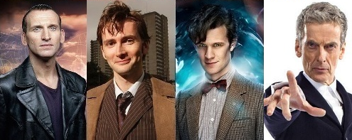

The Doctor
The TARDIS retreived from https://www.pinterest.com/pin/371265563005659019/
Doctor 9: Christopher Eccleston
"On 2 April 2004, it was announced that Eccleston was to play the ninth incarnation of the Doctor in the revival of the BBC science fiction television series Doctor Who, which began transmission on 26 March 2005. Eccleston was the first actor to play the role who was born after the series began, albeit by less than three months. On 30 March 2005, the BBC released a statement, ostensibly from Eccleston, saying that he had decided to leave the role after just one series, because he feared becoming typecast. On 4 April 2005, the BBC revealed that Eccleston's "statement" was falsely attributed and released without his consent. The BBC admitted that they had broken an agreement made in January not to disclose publicly that he only intended to do one series. The statement had been made after journalists made queries to the press office." (https://en.wikipedia.org/wiki/Christopher_Eccleston)
Doctor 10: David Tennant
"Doctor Who returned to British screens in 2005, with Christopher Eccleston playing the role of the Ninth Doctor in the first series. Tennant replaced him as of the second series, making his first, brief appearance as the Tenth Doctor in the episode "The Parting of the Ways" (2005) at the end of the regeneration scene, and also appeared in a special 7-minute mini-episode shown as part of the 2005 Children in Need appeal, broadcast on 18 November 2005. He began filming the new series of Doctor Who in late July 2005. His first full-length outing as the Doctor was a 60-minute special, "The Christmas Invasion", first broadcast on Christmas Day 2005. Tennant had been formally offered the role of the Doctor during rehearsals for The Quatermass Experiment. Although the casting was not officially announced until later in April,both castmates and crew became aware of the speculation surrounding Tennant; in the live broadcast Jason Flemyng (Quatermass) changed his first line to Tennant's Dr Briscoe from "Good to have you back Gordon" to "Good to have you back Doctor" as a deliberate reference." (https://en.wikipedia.org/wiki/David_Tennant)
Doctor 11: Matt Smith
"Smith was revealed as the Eleventh Doctor in the British science-fiction television series Doctor Who in January 2009 to replace David Tennant, who announced his departure in October 2008. Smith was a relatively unknown actor compared to the actors then speculated about possibly taking on the role, who included Paterson Joseph, David Morrissey, Sean Pertwee, James Nesbitt, Russell Tovey, Catherine Zeta-Jones, Chiwetel Ejiofor, Robert Carlyle, and Billie Piper. Smith was first named as a possible successor less than a day before he was announced as the Eleventh Doctor, on 3 January 2009 edition of BBC Breakfast, among the names speculated about. His obscurity prompted the news headline "Doctor Who?", a riff on the show's title." (https://en.wikipedia.org/wiki/Matt_Smith_%28actor%29)
Doctor 12: Peter Capaldi
"Capaldi was cast in 2013 as the Doctor in the BBC science-fiction series Doctor Who. His casting was announced on 4 August 2013 in a special BBC programme hosted by Zo� Ball. Capaldi first appeared as the Doctor in a cameo in the 50th anniversary special, "The Day of the Doctor", before appearing in the 2013 Christmas special, "The Time of the Doctor". A lifelong fan of the series, Capaldi had previously played Lucius Caecilius in the 2008 episode "The Fires of Pompeii" with the Tenth Doctor and his companion Donna Noble, as well as playing civil servant John Frobisher in the 2009 spin-off Torchwood: Children of Earth."(https://en.wikipedia.org/wiki/Peter_Capaldi)